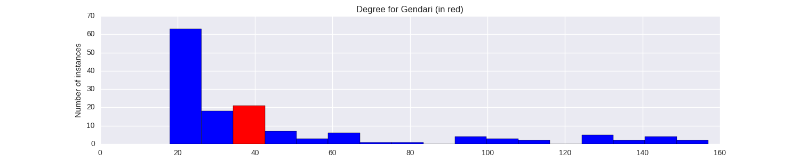

Quantiative Wayang Dictionary
Gendari

Terms of address: Dewi
Type: Human
Origin: India
Notes on the Sanskrit version: Gandhari is the princess of Gandhar and the daughter of King Subala. Sakuni is her brother. She is the wife of Dhirtirashtra and mother of the kauravas. Her act of blindfolding her eyes in response to her husband's blindness is regarded as the sign of her chasteness and love towards her huband.
Alternative names: Anggendari
Description in the Javanese version: Mother of the Korawa. There are many conflicting versions about her parents, siblings, character and death. In the Indian Mahabharata she is depicted as a noble and loyal person. In the Javanese pedhalangan she is most often depicted as bitter and evil. There are multiple stories about her death. In the Yogyakarta tradition, she died together with Drestarastra before the Baratayuda war when Kresna showed himself as a berhala [giant]. The Surakarta tradition states that she died with Drestarastra and Kunti after the end of the Baratayuda war.
Found in the follwing lakon (stories):
Family relationships
Mother: Gandini
Father: Suwala
Siblings: Sengkuni, Gendara, Arya_Sarabasta, Arya_Antisura
Consorts: Destarastra
Offspring: {100Korawa}
More information
Sources: Ensiklopedi Wayang Indonesia, pp. 100-106 (Vol. IV); Rupa dan Karakter Wayang Purwa, pp. 700-701
Network measurements for Gendari
| Measurement | Value | |
|---|---|---|
| Degree | 40.0 |  |
| Weighted Degree | 56.0 |  |
| Closeness Centrality | 0.564935064935 |  |
| Betweeness Centrality | 25.0118267442 |  |
| Eigenvector Centrality | 0.0 |  |
{kind=link}
Characters in the same adegan as Gendari
| Character | Link weight |
|---|---|
| Character | Link weight |